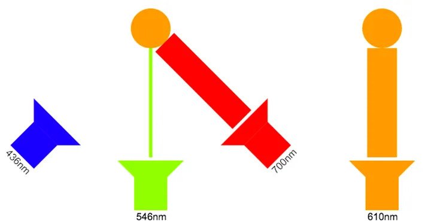
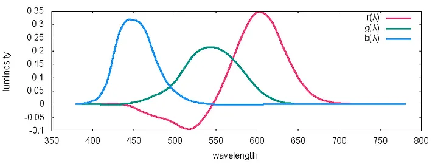
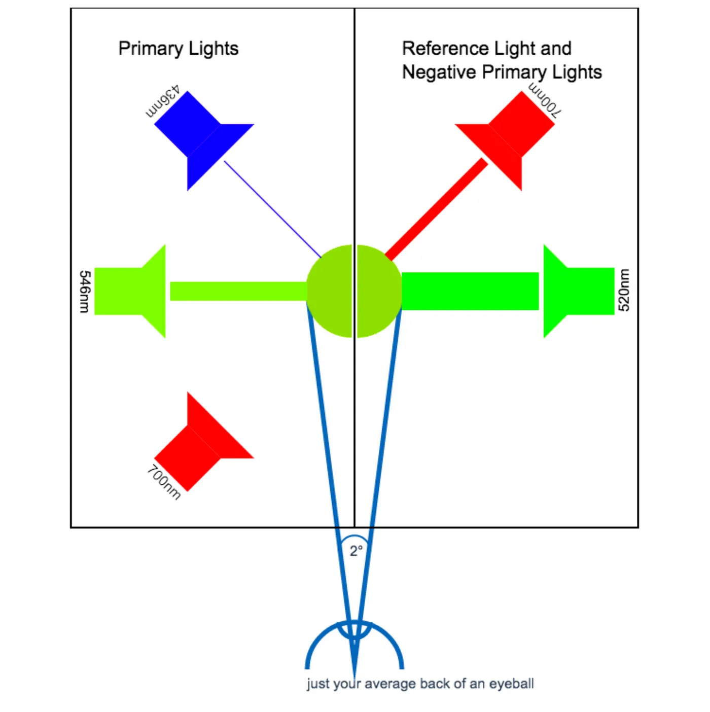
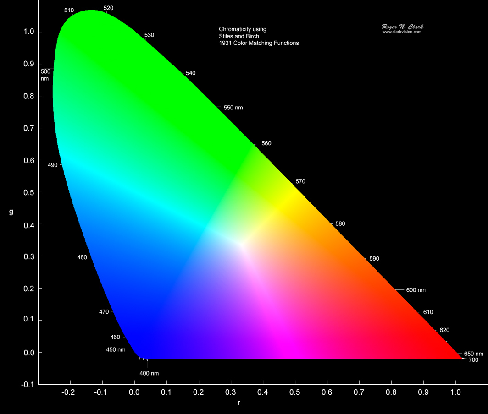
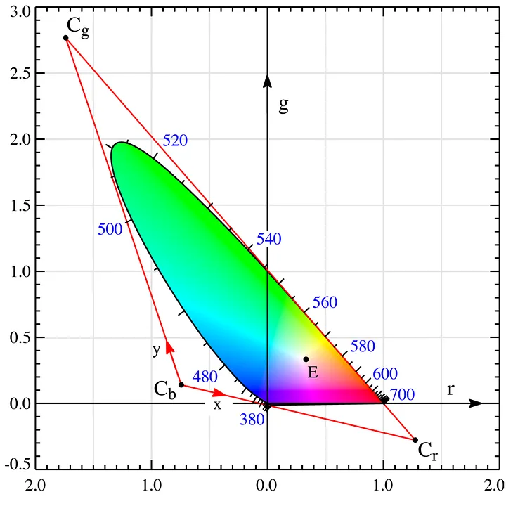
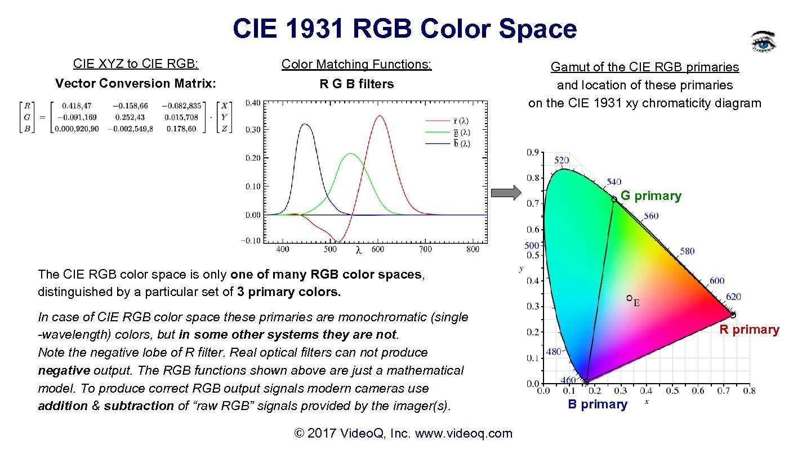
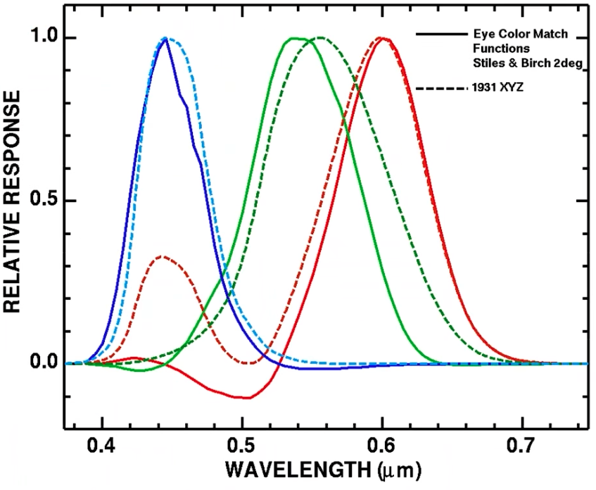
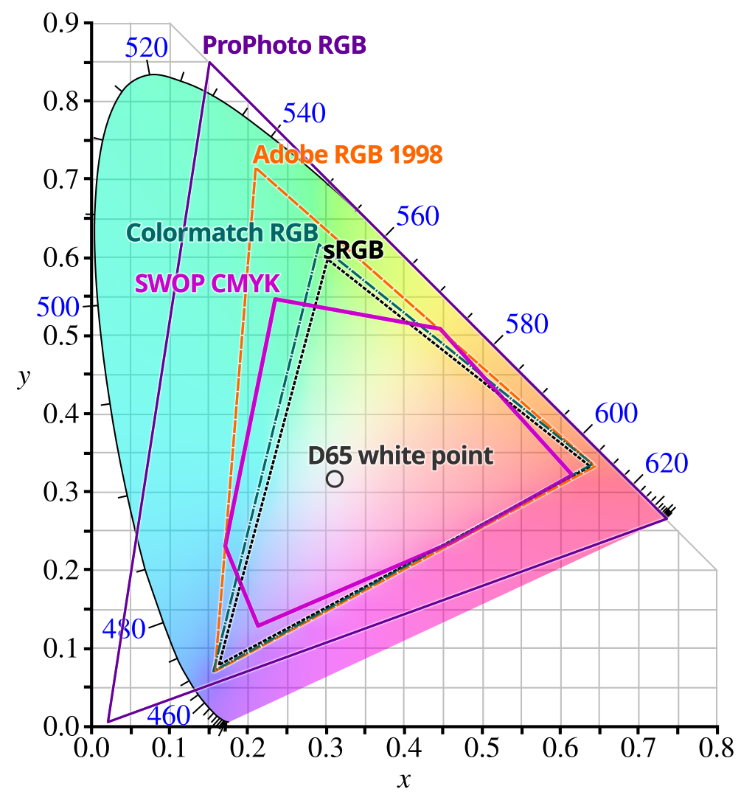
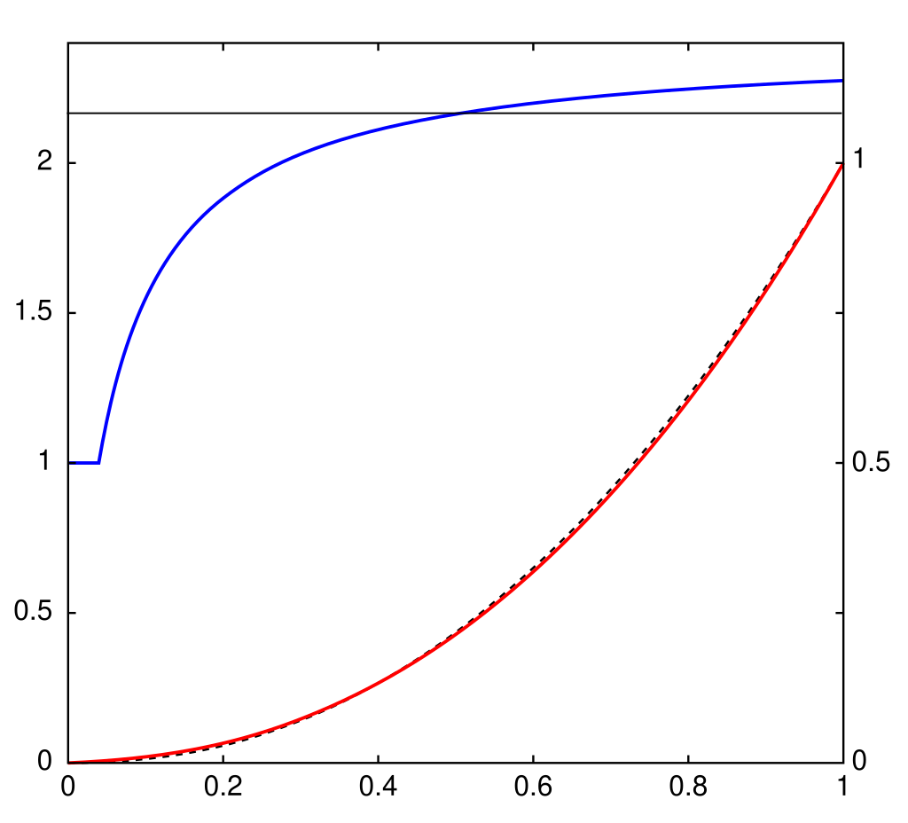

CIE 1931 色空间是具有相同起点的 4 个相互关联的颜色空间[1]。在 20 世纪 20 年代，W. David Wright [2] 与 10 名观察者进行了两项独立的人类颜色感知实验，John Guild [3 ]与 7 名观察者进行了实验。本节描述了他们的结果如何为 CIE 1931 色空间奠定了基础。

通过调节左侧的三种颜色光的强度，直到左右两点颜色相同。就可以绘制出对于人眼每一种颜色的等效曲线。

您可能已经注意到，在颜色匹配函数中，有时他们需要负光量来实现匹配，例如520 nm。实验者发现就算把一个颜色的光降成 0 颜色仍然不匹配。这时，他们就把这个颜色的光从强度 0 开始打在右边，从而得到左边强度为负的等价效果。

由于负值，我们可以表达更广泛的空间，下面[4]是 CIE-RGB。（注意下图中的 r 坐标轴有负数）

1931 Color Matching Functions[4]RGB 的负值让我们表示颜色很麻烦，如果能把 RGB 线性变换一下就好了。选取三个颜色空间外的点，这样三角形就可以把整个 RGB 色彩空间保住，然后进行变换，把三个点变换到坐标轴上去。

以 sRGB[5] 举例，RGB 转换到 XYZ 的公式如下。
$$ \begin{bmatrix} X \ Y \ Z \end{bmatrix} = M = \begin{bmatrix} 0.4124564 & 0.3575761 & 0.1804375 \ 0.2126729 & 0.7151522 & 0.0721750 \ 0.0193339 & 0.1191920 & 0.9503041 \end{bmatrix} \begin{bmatrix} R \ G \ B \end{bmatrix}_{sRGB} $$

当然，RGB 也有好多种，更详细的表格请看：http://www.brucelindbloom.com/index.html?Eqn_RGB_XYZ_Matrix.html线性变换后，响应函数也变成了正数。

在CIE-RGB 的基础上，人们通过改变三个原色的极点，制定了越来越多的变种。比如 sRGB，AdobeRGB 等等。

另外，由于人眼在暗色时对亮度变换更敏感，所以 sRGB 加入了 gamma 矫正，从而在暗色引入更多颜色，减少了人眼看起来变换不大的亮色颜色。但这有带来了新的问题，sRGB 不是线性的了！